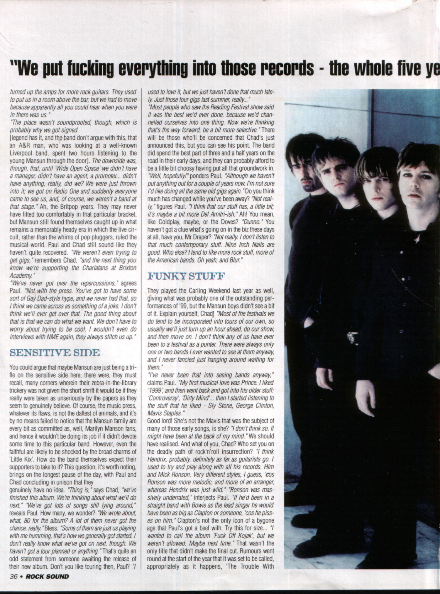
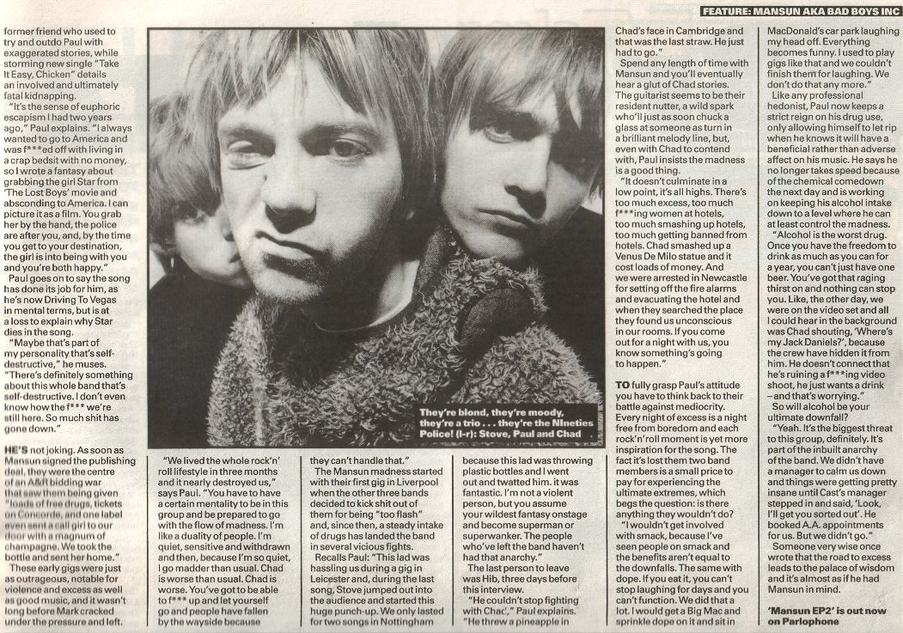

Immersive Print Reader / Magazine Spreads / High-Resolution Press Scans
Magazine
Spread Reader.
Experience the original music press layouts exactly as they appeared in print. Click any page spread or thumbnail to launch the high-resolution full-screen lightbox reader.

"Just For Kix"
An exhaustive 4-page feature exploring the making of Little Kix, the pressures of the Britpop era, and Paul Draper's uncompromising studio vision.
Feature Excerpt
"We put fucking everything into those records — the whole five years is in every word, every part, every gig, everything. People forget what it takes to build a universe of sound from scratch in a studio while the rest of the industry is chasing quick chart positions."
Words: Iain Moffat · Photography: Anton Corbijn
Quick Navigation
Click any scan below to inspect the full print resolution in the lightbox viewer.



"Glam Bam Thank You Man!"
Mansun's breakthrough Nineties glamour feature right on the cusp of Attack of the Grey Lantern.
Feature Excerpt
"It comes down to the songs. If they're no good, it doesn't matter how fabulous you look, or how brilliantly you speak. But when you have both, nobody can touch you."
Words: Ben Stud · Photography: Tom Sheehan
Quick Navigation
Click either page to open the full-size spread.


"Taxi! The A.A.!"
Documenting the chaos of the early 1996 live circuit, venue crushes, and the unstoppable momentum of the Mansun EPs.
Feature Excerpt
"These girls were waiting for Rick Witter and when I appeared they all took two steps back. They said, 'Oh, you scare us, you're mad.' That's good."
Quick Navigation
Click any scan below to inspect the full print layout.


